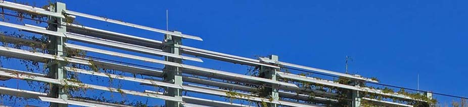
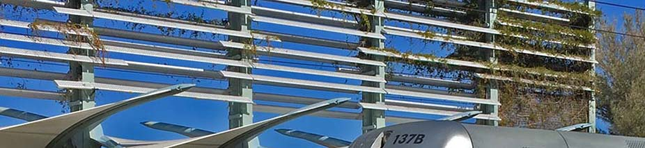
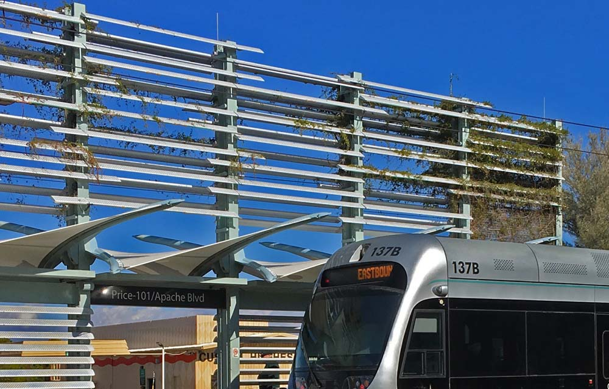
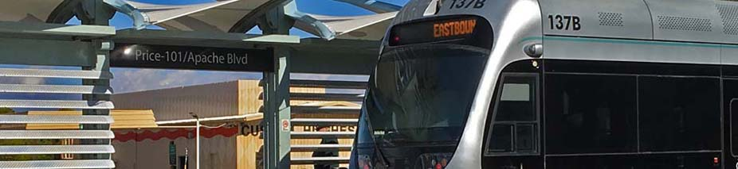

Businesses
Listed in order of distance from intersection.
North side of Apache West of Stop
- None

North Side of Apache East of Stop
-
U-Haul Moving and Storage of Apache Station
- Self-Storage Facility
- 2340 E Apache Blvd
- Tempe, AZ 85281
- (480) 968-0493
-
JML Transmission and Auto
- Auto Repair Shop
- 2408 E Apache Blvd Suite 101
- Tempe, AZ 85281
- (480) 264-2586
-
I Work On Cars Automotive
- Auto Repair Shop
- 2408 E Apache Blvd Suite 105
- Tempe, AZ 85281
- (480) 664-9339
-
Bill's Market
- Grocery Store
- 2422 E Apache Blvd
- Tempe, AZ 85281
- (480) 829-0033
-
Relentless Power Gym
- Gym
- 2424 E Apache Blvd
- Tempe, AZ 85281
- (602) 769-0778
-
Apache ASL Trails
- Assisted Living Facility
- 2428 E Apache Blvd
- Tempe, AZ 85281
- (414) 727-9902
-
People Empowering People of AZ, Inc
- Psychotherapy
- 2428 E Apache Blvd #123
- Tempe, AZ 85281
- (480) 999-3323


South Side of Apache West of Stop
-
Metro Park and Ride
- Valley Metro Parking
- 2235 E Apache Blvd
- Tempe, AZ 85281
- (602) 253-5000

South Side of Apache East of Stop
-
Green Leaf Tempe Station
- Apartments
- 2323 E Apache Blvd
- Tempe, AZ 85281
- (833) 776-3527
-
Watson Flower Shop
- Florist
- 2425 E Apache Blvd
- Tempe, AZ 85281
- (480) 967-0161